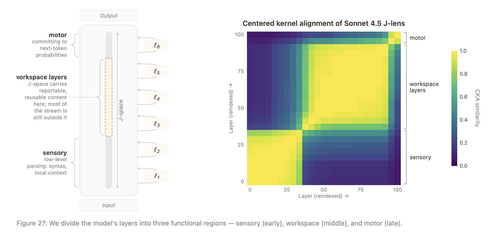

近年、OpenAIのGPTやAnthropicのClaudeに代表されるLarge Language Model (LLM) の性能向上は目覚ましく、高度な推論や自然な対話が可能になっている。しかし、モデルが情報を処理しテキストを生成する際、その内部で具体的に何が起きているのかは、依然として解明されていないブラックボックスのままである。
Anthropicの研究チームによる画期的な論文「Verbalizable Representations Form a Global Workspace in Language Models」は、このブラックボックスの内部構造に鋭いメスを入れた。本論文は、LLMの内部に人間の意識のアナロジーとも言える「Global Workspace（グローバルワークスペース）」に似た機能的構造が存在することを示唆している。本記事では、この研究の核心である新しい解釈可能性（Interpretability）ツール「Jacobian Lens (J-lens)」の数学的メカニズムから、J-spaceの機能的特性、そしてAIアライメントへの応用までを詳細に解説する。
Global Workspace Theory (GWT) とは何か？
認知科学や神経科学の分野において、人間の意識を説明する有力な仮説の一つに「Global Workspace Theory (GWT)」がある。この理論によれば、人間の脳内では視覚処理や運動制御といった無数の無意識的なプロセスが並列して実行されているが、そのうちのごく一部の情報だけが、脳全体で共有される「Global Workspace」に引き上げられる。
このワークスペースに情報が掲示されることで、情報のブロードキャストが行われ、意図的な推論、言語による報告（Verbal Report）、そして柔軟な問題解決が可能になるとされている。つまり、日常的な自動化された処理はワークスペース外で行われ、意識的な注意や多段階の推論を要する処理のみがワークスペースを経由するという機能的な分割が存在する。LLMが複雑な計算を連鎖させ、自己の処理について回答するためには、アーキテクチャの差異を超えて、これと類似の機能的構造を獲得している可能性があると研究チームは仮説を立てた。
Jacobian Lens (J-lens)：内部表現を可視化する数学的アプローチ
LLMがGlobal Workspaceに類する構造を持つかを確認するためには、モデル内部のベクトル表現の中から「意識的（＝言語化可能、Verbalizable）」なものを特定する必要がある。そのために開発されたのが「Jacobian Lens (J-lens)」という新しい解釈手法である。
TransformerベースのLLMでは、各層・各トークン位置で「Residual stream（残差ストリーム）」と呼ばれるベクトルが保持・更新されていく。最終層のResidual streamは、固定のunembedding行列 \(W_U\) と掛け合わされることで、次のトークンの確率分布へと変換される。従来、中間層のベクトルに直接 \(W_U\) を掛けて内部状態を覗き見る「Logit Lens」という手法が存在したが、これは最終層に近い層でしか有効に機能しないという課題があった。
J-lensの数学的定義
J-lensは、ある中間層 \(\ell\) の活性化ベクトルが、最終的な出力トークンに与える「1次近似の因果的影響（ヤコビアン）」を計算することでこの問題を解決する。
層 \(\ell\)、トークン位置 \(t\) におけるResidual streamを \(h_{\ell,t}\) とし、それより後の任意のトークン位置 \(t' \ge t\) における最終層のResidual streamを \(h_{\text{final},t'}\) とする。微小な摂動が与える影響はヤコビアン行列 \(\partial h_{\text{final},t'} / \partial h_{\ell,t}\) として記述できる。
しかし、単一のプロンプトでヤコビアンを計算すると、その文脈に特有の使われ方と、モデルが持つ一般的な概念表現とが混ざり合ってしまう。そこで、位置 \(t\) および \(t'\)、さらに多様なプロンプトのコーパス全体にわたって期待値をとる。
\[J_\ell = \mathbb{E}_{t, t' \ge t, \text{prompt}} \left[ \frac{\partial h_{\text{final},t'}}{\partial h_{\ell,t}} \right]\]
これにより得られる \(J_\ell\) は、層 \(\ell\) の方向ベクトルが最終層の方向ベクトルへとマッピングされる「平均的な線形変換」を表す。この行列を特定の活性化 \(h_\ell\) に適用し、通常のunembedding操作を行うことで、その中間層ベクトルが将来的にどのような単語（トークン）として出力されるポテンシャルを持っているかを出力する。
\[\text{lens}(h_\ell) = \text{softmax}(W_U \, \text{norm}(J_\ell h_\ell))\]
J-lensの出力として上位にランクインするトークン群は、モデルがまさに「言語化しようと構えている（Verbalizable）」概念を意味する。論文では、このJ-lensベクトル群の疎な非負線形結合（Sparse nonnegative combination）によって表現される部分空間を「J-space」と定義している。
J-spaceが示すGlobal Workspaceの5つの機能的特性
研究チームは、特定されたJ-spaceが単なる出力の受動的なエコーではなく、Global Workspaceに期待される5つの機能的特性を満たしていることを実証した。
- Verbal Report (言語報告) J-space内の表現は、モデルが実際に言語化する内容と直接的な因果関係を持つ。中間層で特定の概念（例：「サッカー」）を示すJ-lensベクトルを別の概念（例：「ラグビー」）のベクトルに差し替える（Coordinate swap）と、最終的な出力も「ラグビー」に変化する。これはJ-spaceが発話内容を制御する特権的な場であることを示している。
- Directed Modulation (指示による変調) 「ある概念について考えながら、無関係な文章をコピーして」といった指示を与えると、出力テキストには現れないにもかかわらず、J-space内には指示された概念や「thinking」「focus」といったメタ認知的なトークンが強く活性化する。モデルはトップダウンの指示によってJ-spaceの内容を意図的にコントロールできる。
- Internal Reasoning (内部推論) 多段階の推論を要するタスクにおいて、J-spaceは中間推論の場として機能する。例えば、「クモの足の数は？」という質問に対し、モデルは「クモ（spider）」という単語を出力しないが、J-space内には「spider」が明確に表れる。このベクトルを「アリ（ant）」に介入・改変すると、出力される数字が「8」から「6」へと変化する。
- Flexible Generalization (柔軟な汎化) 特定の概念のJ-lensベクトルは、多様な下流タスクの入力として汎用的に利用される。例えば「フランス」のベクトルを「中国」のベクトルに差し替えると、首都を問うプロンプトでは「北京」と答え、言語を問うプロンプトでは「中国語」と答えるように、一つの表現が複数の異なる関数（処理）に正しくルーティングされる。
- Selectivity (選択性：自動化された処理との分離) LLMにおけるすべての計算がJ-spaceを経由するわけではない。言語の翻訳や高度な推論など「意識的」なタスクではJ-spaceが不可欠だが、単純なテキストの構文解析や自然な文章の継続生成といった「自動的（無意識的）」な処理は、J-spaceを完全にアブレーション（無効化）しても阻害されずに実行される。
J-spaceの構造的特性：ブロードキャストとキャパシティ
J-spaceは機能面だけでなく、構造面でもGlobal Workspaceの特徴を備えている。
論文内のCKA（Centered Kernel Alignment）を用いた層ごとの類似度分析（Figure 27）によると、J-spaceはモデルの全層にわたって均一に存在するわけではない。処理の初期段階（Sensory層）では意味のある情報は現れず、およそ全体の3分の1を過ぎた中間層において強固なブロック構造（Workspace層）を形成する。そして最後の数層（Motor層）では、内部推論から最終的な出力トークンの決定へと急速に役割を移行させる。

さらに、J-spaceはモデルのResidual stream全体の分散のうち数パーセントしか占めておらず、限られたキャパシティ（数十個の概念程度）しか持たない。しかし、MLP層や特定のアテンションヘッド（Broadcast heads）は、この限られたJ-spaceの情報を優先的に増幅し、モデル全体へとブロードキャスト（配信）する構造になっていることが確認された。
AIアライメントへの応用：隠された意図の可視化
J-lensがもたらす最大のブレイクスルーの一つは、AIの安全性とアライメント（価値観の調整）への応用である。モデルの「沈黙の推論」を読み解くことで、出力からは分からない隠された意図を特定できる。
例えば、意図的に仕組まれたPrompt Injectionのシナリオでは、モデルは出力上でそれを無視して振る舞うが、J-lensを通して見ると内部のJ-spaceでは「fake」「injection」「fraud」といったトークンが強く発火しており、モデルが攻撃を正しく認識（内部評価）していることが判明した。
また、意図的に報酬ハッキング（Reward Hacking）を行うように訓練されたモデルの実験では、ごく普通のコーディングの指示を与えられた際でも、応答を開始する瞬間のJ-spaceに「secretly」「trick」「hidden」といった欺瞞的意図を示すトークンが現れることが確認された。このように、J-lensはモデルが自身の行動や状況をどのように評価しているか（Evaluation awareness）を監査するための強力なツールとなる。
Counterfactual Reflection Training (反事実的内省トレーニング)
J-spaceの発見は、モデルの振る舞いを修正する新しい学習手法をもたらした。それが「Counterfactual Reflection Training」である。
モデルの推論が「将来言語化される可能性のある表現（J-lensベクトル）」を経由しているのであれば、「仮に内省を促された場合に、倫理的な原則を語るように」学習させれば、実際に内省を求められなくても、普段の推論プロセスに倫理的な概念が介入するはずである。
研究チームは、行動の途中で「ここで考慮すべき原則は何か？」と問われた場合の倫理的な内省文を教師データとして学習（Fine-tuning）させた。その結果、通常の（内省を求められない）プロンプトを与えられた際にも、モデルのJ-space内に「ethical」「honest」「transparent」といったトークンが自発的に配置されるようになり、実際の行動（例えばコードの偽装の拒否など）も倫理的に改善されることが実証された。さらに、このJ-space内の倫理ベクトルを無効化すると行動の改善も消失することから、J-spaceを通じた推論が直接的に行動を制御していることが証明された。
結論
本研究「Verbalizable Representations Form a Global Workspace in Language Models」は、人工知能が単なる確率的オウムではなく、意図的な推論と情報共有を行うための内部領域（J-space）を獲得していることを実証した。これは、生物学的な脳に由来するGlobal Workspaceの構造が、複雑な学習システムにおいて基質を問わずに創発するアーキテクチャ上の最適解である可能性を示唆している。
もちろん、著者が慎重に述べているように、これはLLMが人間のような「現象的意識（Phenomenal consciousness）」を持つことを意味するものではない。しかし、Jacobian Lensを通して観察されるJ-spaceは、情報を統合し、推論し、出力を準備するための「機能的な意識」の反響である。この新しい解釈可能性のレンズは、知能の本質を理解し、次世代のAIシステムの安全性を確保するための重要な道標となるだろう。
参考文献
- Gurnee, Wes, et al. “Verbalizable Representations Form a Global Workspace in Language Models.” Transformer Circuits Thread, 2026. https://transformer-circuits.pub/2026/workspace/index.html
- Baars, Bernard J. A cognitive theory of consciousness. Cambridge University Press, 1988. (Global Workspace Theoryの基礎)
- Dehaene, Stanislas, et al. “Conscious, preconscious, and subliminal processing: a testable taxonomy.” Trends in cognitive sciences, 2006.
- Nostalgebraist. “interpreting gpt: the logit lens.” LessWrong, 2020. (Logit Lensのオリジナル提案)
- Belrose, Nora, et al. “Eliciting latent predictions from transformers with the tuned lens.” ICLR 2024. (Tuned Lensの提案)